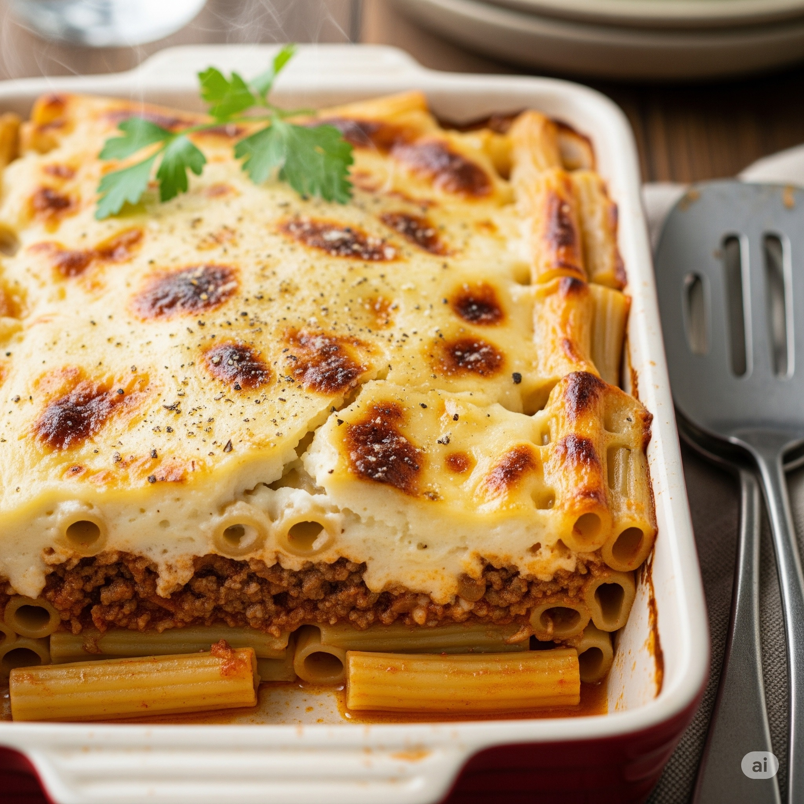

Home
Pastitsio: A perfect Sunday Dish

Description
Pastitsio is a greek baking dish that in simple terms has three layers.
The pasta the minced meat and the velvety bechamel on top. But its more
than that. Layer upon layer, it tells a story: tender pasta kissed with
cheese then a heart of spiced minced meat simmered with cinnamon and
clove that creates a symphony of smells that travels you to different
places, and to top it off its crowned by the mouth watering golden béchamel.
Its much more that just a dish. Its a memory of a beautiful sunday
afternoon with Yiayia calling us at the family table. The kind of meal
hat fills the kitchen with smiles laughter and family members.
For the Minced meat layer
- 750g of ground veal meat
- 1 medium size onion chopped
- 2 minced garlic cloves
- 3 tbsp of olive oil
- 1/4 cup of red wine
- 1 Knorr beef cube
- 1/2 tsp of cinnamon
- 1/4 tsp of allspice
- 1/4 tsp of ground clove
- 1 1/2 cup of tomato sauce
- 2 tbsp of tomato paste
- 1 bay leaf
- Salt and pepper to taste
For the Bechamel sauce
- 1 litter of milk
- 100g of butter
- 100g of flour
- 1/4 ground nutmeg
- 1 cup of grated Kefalotyri cheese
- Salt and pepper to taste
Steps
For the pasta
- Boil pasta until al dente. Drain and return to the pot
- Mix in butter and the grated cheese. Set aside.
For the Meat sauce
- In a pan, heat olive oil and sauté the onion until soft.
- Add garlic,and a bit later then ground meat
- Add the wine and let the alcohol evaporate for a minute or two
- Stir in tomato paste,tomato sauce, cinnamon, allspice,clove, knorr cube and bay leaf
- Season with salt and pepper
- immer on low heat for 20–25 minutes until thickened. Remove bay leaf.
For the Bechamel sauce
- Melt butter in a saucepan. Add flour and stir fast for 2 minutes until you make a golden paste
- Gradually add warm milk while whisking to avoid lumps.
- Cook until thick and smooth
- Remove from heat.Add nutmeg and cheese
Assembly and Baking
- Make a base layer with the pasta
- Top the pasta with the meat sauce
- Cover with the bechamel sauce and sprinkle grated cheese on top
- Bake for 45 to 50 minutes until the top is golden
- Let rest for at least 20 to 30 minutes before slicing